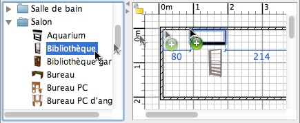

| Ajout de portes, de fenêtres et de meubles | |||
Pour ajouter des portes, des fenêtres ou des meubles à votre logement, glissez-déposez les un par un du catalogue vers le plan du logement ou la liste des meubles.  Vous pouvez aussi sélectionner un ou plusieurs meubles dans le catalogue, puis choisir le menu Meubles > Ajouter au logement ou cliquer sur l'outil Ajouter au logement.
Quand les meubles sont déposés dans la liste des meubles ou ajoutés avec le menu Meubles > Ajouter
au logement , la position de leur coin supérieur
gauche est au point (0, 0). Les meubles ajoutés au logement sont sélectionnés et dessinés simultanément dans la liste des meubles, dans le plan et dans la vue 3D. Pendant la durée de chargement du modèle 3D des meubles ajoutés, ces meubles sont représentés sous la forme d'une boîte blanche dans la vue 3D. |
|